接合・溶接の科学で
ものづくりの未来を拓く
ADVANCING MANUFACTURING
THROUGH JOINING AND WELDING SCIENCE
お知らせNEWS
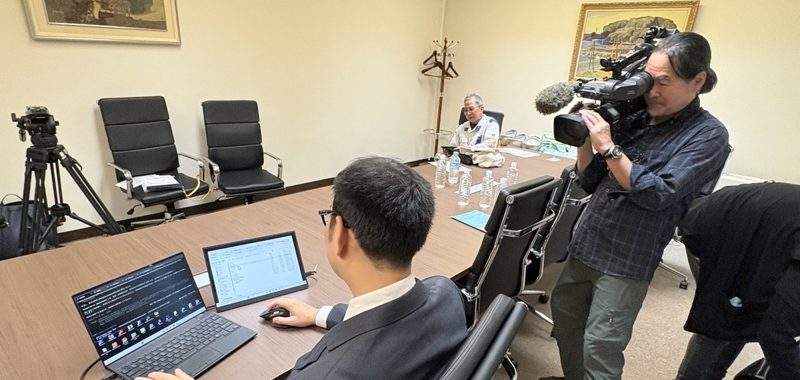
「サイエンスZERO」出演(11/22(明日)23:30～ )のお知らせ
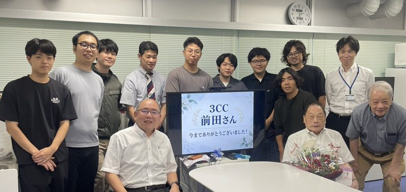
スリーシーシー前田様 ご退職のお知らせ
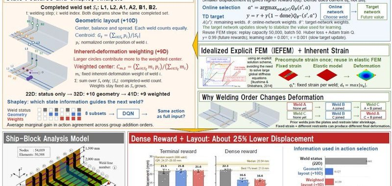
前田新太郎 特任講師と王聞達 特任助教が、東京科学大学で開催された国際会議「STAC-16 and DEJI2MA-6 Joint Conference」において、ポスター発表を行いました。
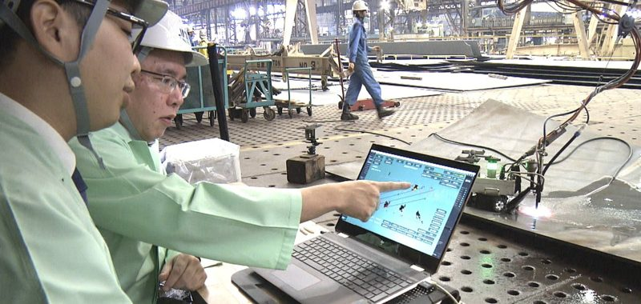
「サイエンスZERO」出演のお知らせ
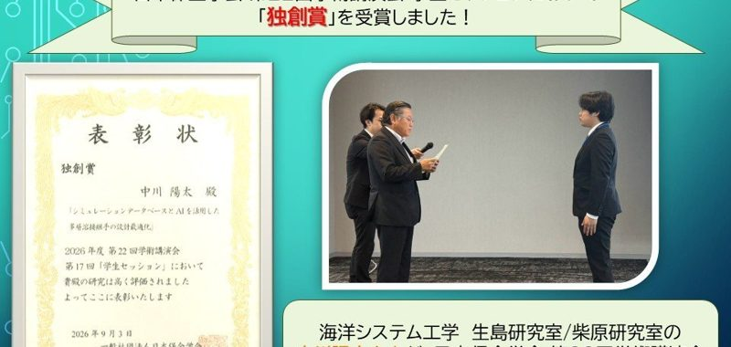
柴原研究室/生島研究室 中川陽太さんが「日本保全学会 第22回学術講演会 学生セッション」において受賞した「独創賞」に関する受賞記事が、大阪公立大学 工学研究科公式Xおよび工学研究科公式Webサイトに掲載されました。
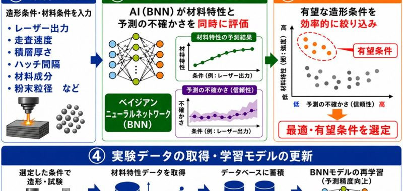
『阪大など、金属積層造形をAI支援 高性能部品 の 開発費削減』というタイトルで、「9/16 日刊工業新聞」に掲載されました。
ライブ計算LIVE SIMULATION
LIVE簡易デモ 溶接パス - ステップ 0 最大たわみ 0 Δx
計算で、溶接を見る。板の上を熱源が動き、温まり、冷えて反っていく。その様子を、いまこの画面の中で計算しています。マウスを乗せると視点が動きます。
研究テーマRESEARCH THEMES
 溶接・
溶接・接合工学 Welding and Joining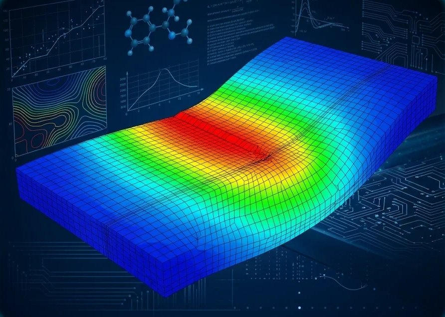
数値溶接 Computational Welding Mechanics力学 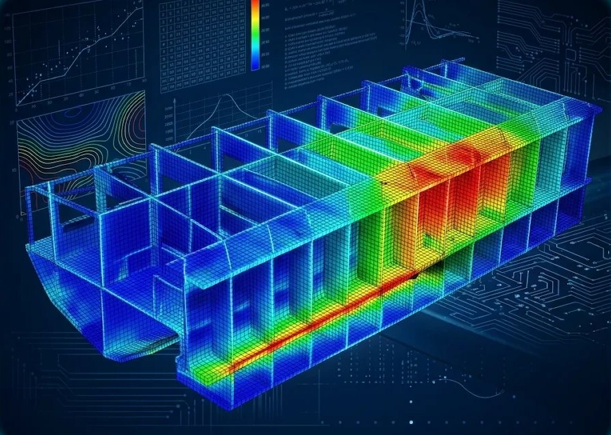
理想化陽解法 Idealized Explicit FEMFEM  AI・
AI・機械学習 Artificial Intelligence / Machine Learning デジタル
デジタルツイン Digital Twin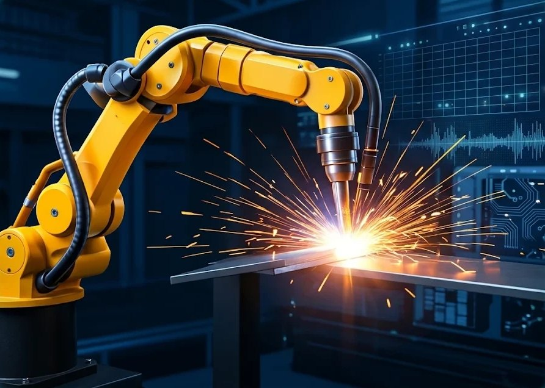
溶接ロボット・ Welding Robot and Automation自動化  線状加熱・
線状加熱・ひずみ取り Line Heating & Distortion Correction技術  金属AM
金属AM（WAAM/ Metal Additive ManufacturingDED） 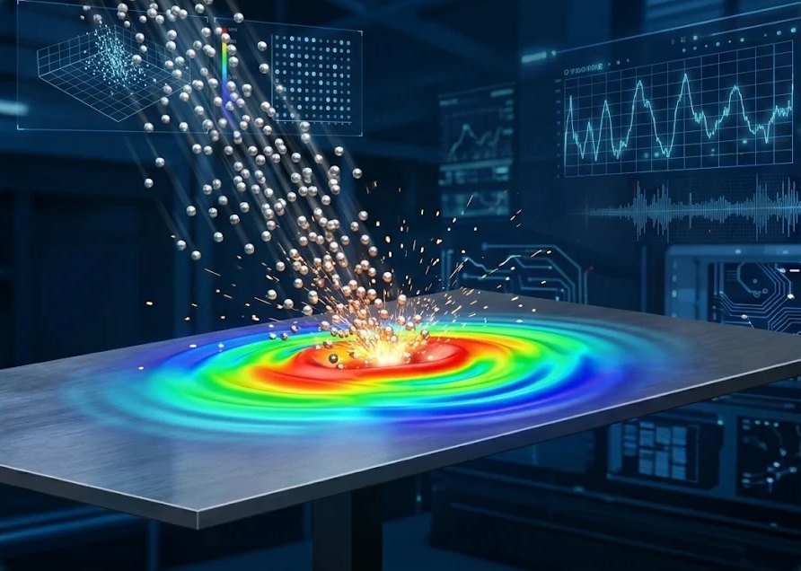
ショットピーニング Shot Peening Simulation解析 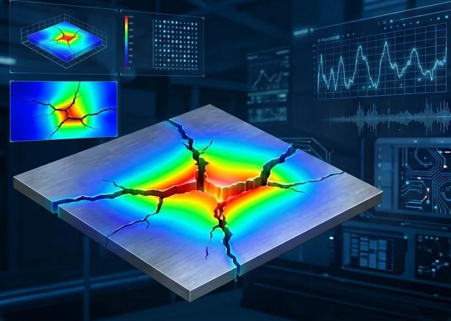
高温割れ・健全性 Hot Cracking and Integrity Assessment評価
※画像は生成AIで作成したイメージです。